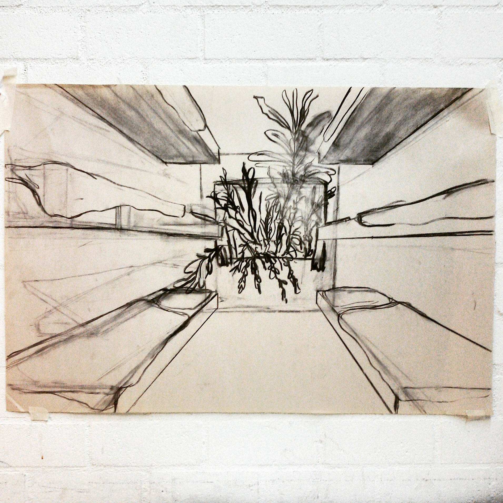
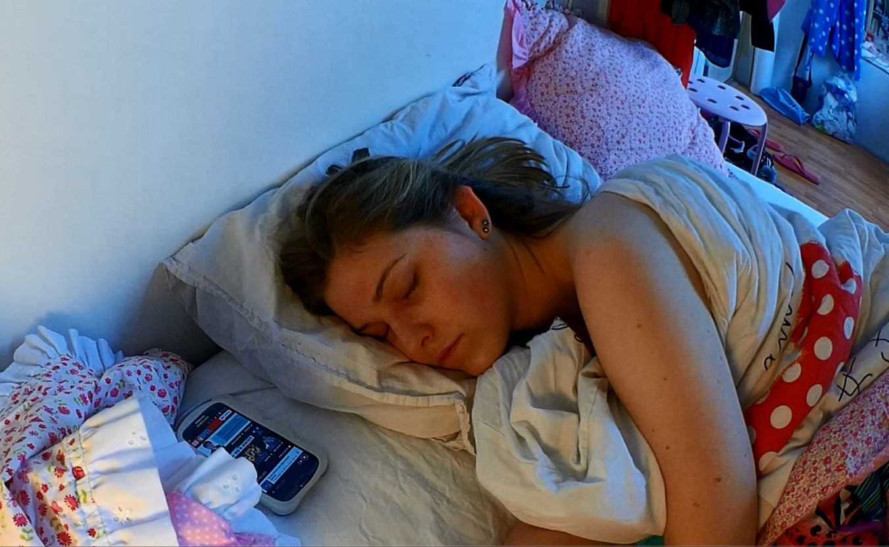
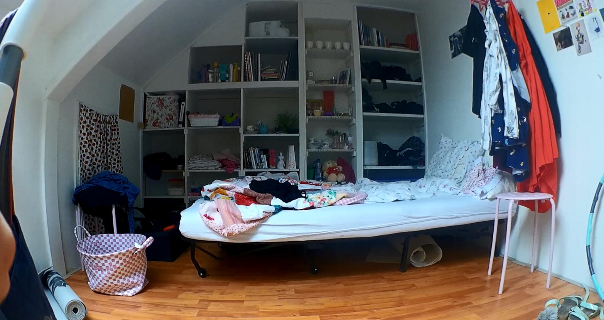
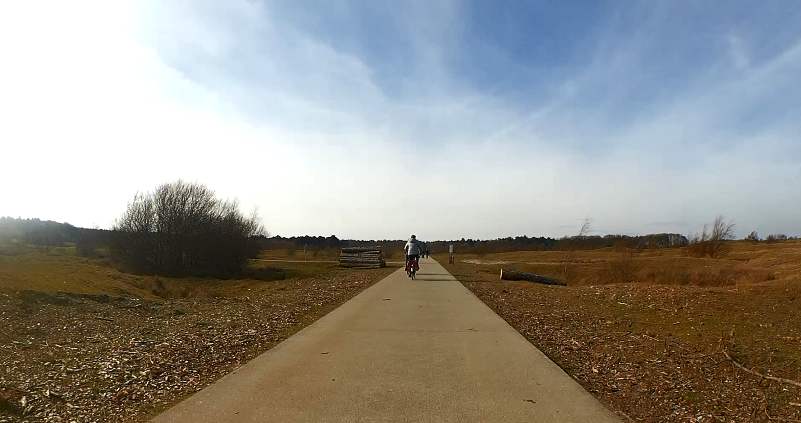

Over mij
Ik ben momenteel bijna klaar met mijn master Kunstgeschiedenis (track moderne en hedendaagse kunst), met een specialisatie in educatie. Voorafgaand heb ik de opleiding Docent Beeldende Kunst en Vormgeving aan ArtEZ Arnhem afgerond. Ik beoefen op dit moment alles wat met lesgeven (in de ruimste zin van het woord), kunst en cultuur te maken heeft. Ik ben een sociaal, creatief, leergierig, ambitieus en vind de sfeer in een team erg belangrijk. Nieuwsgierig? Scroll door!
Kunsteducatie
Ik heb vier stages mogen lopen in het voortgezet onderwijs op VMBO, Havo en VWO-niveau. Ik haal veel voldoening uit het opbouwen van een band met leerlingen. Ook vind ik het leuk om vernieuwende mogelijkheden uit te proberen in de lessen zoals het gebruik van nieuwe media, daarnaast streef ik naar een manier van werken met de leerlingen die zo veel mogelijk lijkt op de praktijksituatie van een kunstenaar. Onderwerpen waar ik graag mee werk zijn bijvoorbeeld hedendaagse discussiepunten die recent in het nieuws zijn, of die iets met mediawijsheid te maken hebben. Ook leg ik graag een link met populaire cultuur om het voor leerlingen herkenbaar te houden.
Tevens heb ik ervaring op kunnen doen in het buitenschoolse werkveld. Ik loop nu een stage bij Marres, huis voor hedendaagse cultuur in Maastricht waar ik onderzoek doe en de educatieafdeling ondersteun. Verder heb ik stage gelopen bij het Rijksmuseum in Amsterdam en het Jan Cunen Museum in Oss. Op deze laatste plek heb ik met zowel kinderen als VMBO-leerlingen projecten kunnen ontwerpen en uitvoeren.
Beeldend werk




Contact
Voor meer informatie over mijn werkzaamheden bij Marres kijk op: https://marreseducation.org/
Ik ben momenteel ook te boeken als freelancer, voor mijn volledige cv of informatie over de mogelijkheden van samenwerkingen en dergelijken mail naar: amberstoop@hotmail.com
